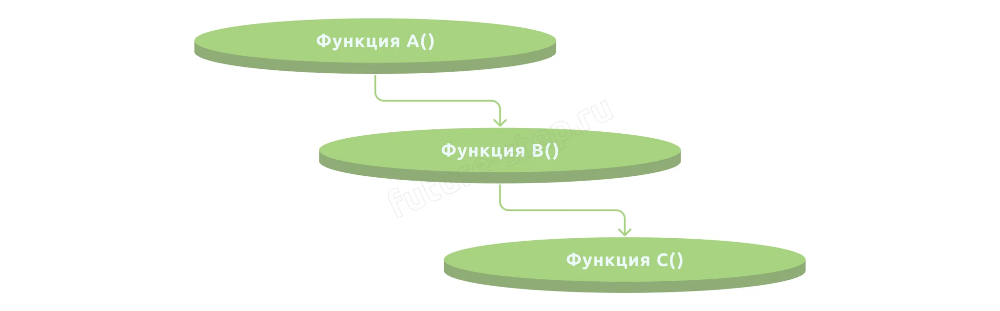
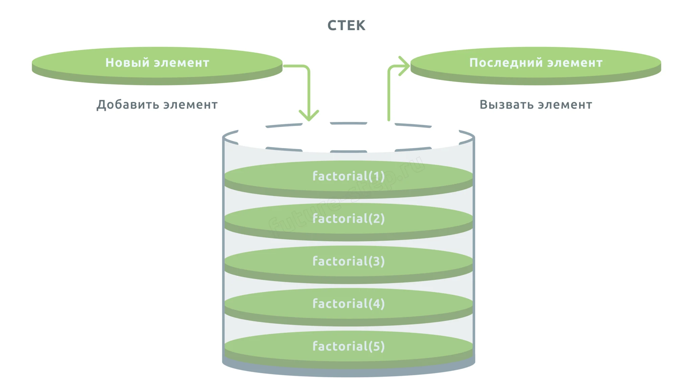
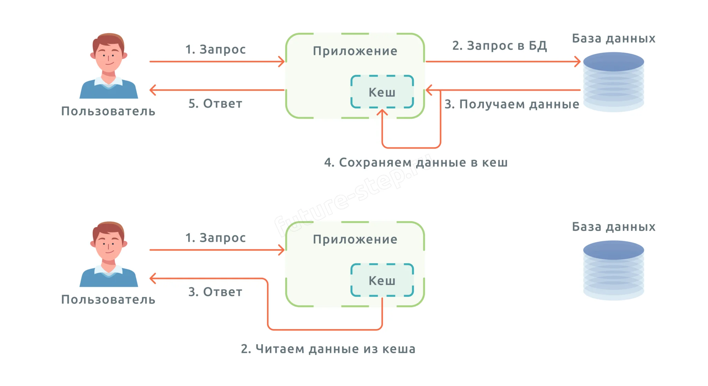
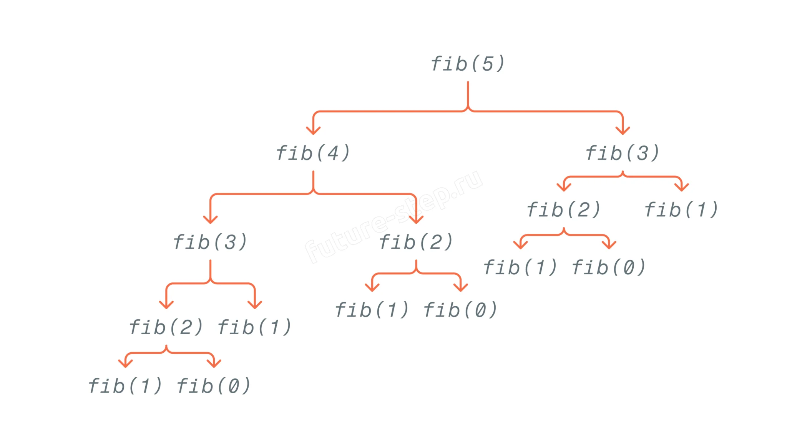

Теория · Рекурсивные функции, стек вызовов, мемоизация, декоратор @lru_cache
Рекурсия — это процесс, при котором функция вызывает саму себя. Такая функция решает большую задачу, разбивая её на более мелкие подзадачи того же типа.
Классический пример — вычисление факториала:
n! = n × (n−1)!, 1! = 1
Здесь n × (n−1)! — рекурсивный случай (функция вызывает себя с меньшим аргументом), а 1! = 1 — базовый случай (условие остановки рекурсии). Без базового случая функция будет вызывать себя бесконечно.
def factorial(n): # Базовый случай if n == 1: return 1 # Рекурсивный случай return n * factorial(n - 1)
Каждый вызов функции помещается в стек вызовов — специальную область памяти. Стек работает по принципу LIFO (last in – first out): последняя вызванная функция выполняется первой.


⚠️ Стек вызовов не бесконечен. В Python максимальная глубина рекурсии по умолчанию — 1000 вызовов. Если рекурсия глубже — возникает ошибка RecursionError: maximum recursion depth exceeded.
import sys print(sys.getrecursionlimit()) # 1000
Глубину можно увеличить с помощью sys.setrecursionlimit(). Это простой способ, который позволяет не менять структуру рекурсивной функции — достаточно добавить одну строку перед её вызовом.
import sys sys.setrecursionlimit(2025)
⚠️ Осторожно: слишком большое значение может привести к переполнению стека и аварийному завершению программы. Однако в задачах ЕГЭ глубина рекурсии редко превышает 10 000–20 000, и такая проблема практически не встречается.
Итеративный подход — это способ вычисления рекуррентной функции без использования рекурсии. Вместо того чтобы вызывать функцию многократно, мы один раз проходим циклом от базового случая до нужного n и сохраняем все значения в список.
Этот подход является частным случаем динамического программирования снизу вверх (bottom-up DP). Мы начинаем с базовых значений, уже известных по условию, и последовательно вычисляем каждое следующее, опираясь на ранее сохранённые. Никакой рекурсии — только цикл и список.
💡 Главное преимущество: итеративный подход полностью избавляет от проблем с глубиной рекурсии. Даже если n = 100 000, программа отработает без ошибок — мы не используем стек вызовов, только обычный цикл.
# Условие: F(n) = 1 при n ≤ 3, F(n) = (n+3) × F(n−2) при n > 3 def f_iter(n): if n <= 3: return 1 # Список для хранения значений: F(0), F(1), F(2), F(3) cache = [1, 1, 1, 1] # Вычисляем от 4 до n for i in range(4, n + 1): cache.append((i + 3) * cache[i - 2]) return cache[n] print(f_iter(2028) // f_iter(2024)) # работает без рекурсии
🔍 Сравнение с рекурсивным подходом: и рекурсия с мемоизацией, и итеративный подход дают одинаковый результат. Разница в том, как мы обходим граф вычислений: рекурсия идёт «сверху вниз» (от большого n к базовому случаю), а итеративный подход — «снизу вверх» (от базового случая к большому n). В задачах ЕГЭ оба подхода работают, но итеративный не требует настройки глубины рекурсии.
В задании 16 встречаются нестандартные формулировки, для которых стандартный подход нужно адаптировать. Ниже — примеры с обычными рекурсивными функциями и увеличением глубины рекурсии через sys.setrecursionlimit().
В некоторых задачах F(n) зависит от F(n+k), где k > 0 — аргумент увеличивается с каждым шагом, а базовый случай находится при больших n. Например: F(n) = n при n ≥ 2025, иначе F(n) = n + F(n+2).
Здесь рекурсия идёт не вниз (к меньшим n), а вверх (к большим n). Это не меняет сути: мы так же переписываем функцию по условию, увеличиваем глубину рекурсии и вызываем для нужного аргумента.
import sys sys.setrecursionlimit(3000) def F(n): if n >= 2025: return n return n + F(n + 2) print(F(2020) - F(2023))
💡 Ничего принципиально нового: рекурсивная функция записывается точно так же, как и в обычных задачах. Единственное отличие — аргумент в рекурсивном вызове больше текущего, а не меньше. Увеличение глубины рекурсии работает одинаково в обоих случаях.
Взаимная рекурсия — ситуация, когда функция F(n) вызывает G(n), а G(n) вызывает F(n−1). Две функции ссылаются друг на друга, и для вычисления одной нужно знать значение другой.
Решение: записываем обе функции по условию, увеличиваем глубину рекурсии и вызываем нужные значения. Python сам разберётся с порядком вычислений — каждая функция будет вызывать другую, и стек вызовов отработает корректно.
import sys sys.setrecursionlimit(3000) def F(n): if n == 1: return 1 return 2 * G(n) + 3 * n def G(n): if n == 1: return 1 return F(n - 1) + 5 * n print(abs(F(4) - G(5)))
💡 Ключевой момент: функции F и G просто вызывают друг друга. Никакой специальной обработки не требуется — стандартное увеличение глубины рекурсии решает проблему. Порядок определения функций не важен, так как на момент вызова обе уже определены.
Мемоизация — техника оптимизации, при которой результаты выполнения функции сохраняются в кеше. При повторном вызове с теми же аргументами результат берётся из кеша, а не вычисляется заново.
Мемоизация vs кеширование: мемоизация — частный случай кеширования, применяемый для оптимизации вычислений в функциях. Кеширование — более общая техника для ускорения доступа к данным (веб-страницы, базы данных).

Без мемоизации вычисление 35-го числа Фибоначчи занимает ~3 секунды — каждый вызов порождает два новых, и количество вызовов растёт экспоненциально.

💡 С мемоизацией: каждое значение вычисляется один раз и сохраняется. Время вычисления 35-го числа сокращается с 3 секунд до 0,05 миллисекунды — ускорение в ~68 000 раз.
@lru_cache — готовый декоратор из модуля functools, реализующий мемоизацию со стратегией вытеснения LRU (Least Recently Used — «наименее недавно использованный»).
Стратегия LRU: когда кеш заполнен, удаляется элемент, который не использовался дольше всего. Это интуитивно понятная стратегия: если элемент давно не запрашивали — он, вероятно, не понадобится и в будущем.
| Параметр | По умолчанию | Описание |
|---|---|---|
maxsize | 128 | Максимальное количество кешируемых результатов. None — без ограничений. |
typed | False | Если True, аргументы разных типов (1 и 1.0) кешируются раздельно. |
from functools import lru_cache @lru_cache() def fib(n): if n < 2: return n return fib(n - 1) + fib(n - 2) # Прогреваем кеш — вычисляем все значения от 0 до 3500 for i in range(3501): fib(i) print(fib(3500)) # мгновенно, без мемоизации — не дождётесь
После применения декоратора у функции появляются:
.cache_info() — статистика: hits (попадания в кеш), misses (промахи), maxsize, currsize..cache_clear() — полная очистка кеша.💡 Рекомендация для ЕГЭ: для задания 16 используйте @lru_cache с прогревом кеша в цикле — вызовите функцию для всех значений от базового случая до максимального аргумента. Это самый надёжный способ: он работает быстро и не требует вручную увеличивать глубину рекурсии. Альтернативно можно использовать итеративный подход — он полностью избавляет от рекурсии и проблем с глубиной стека.